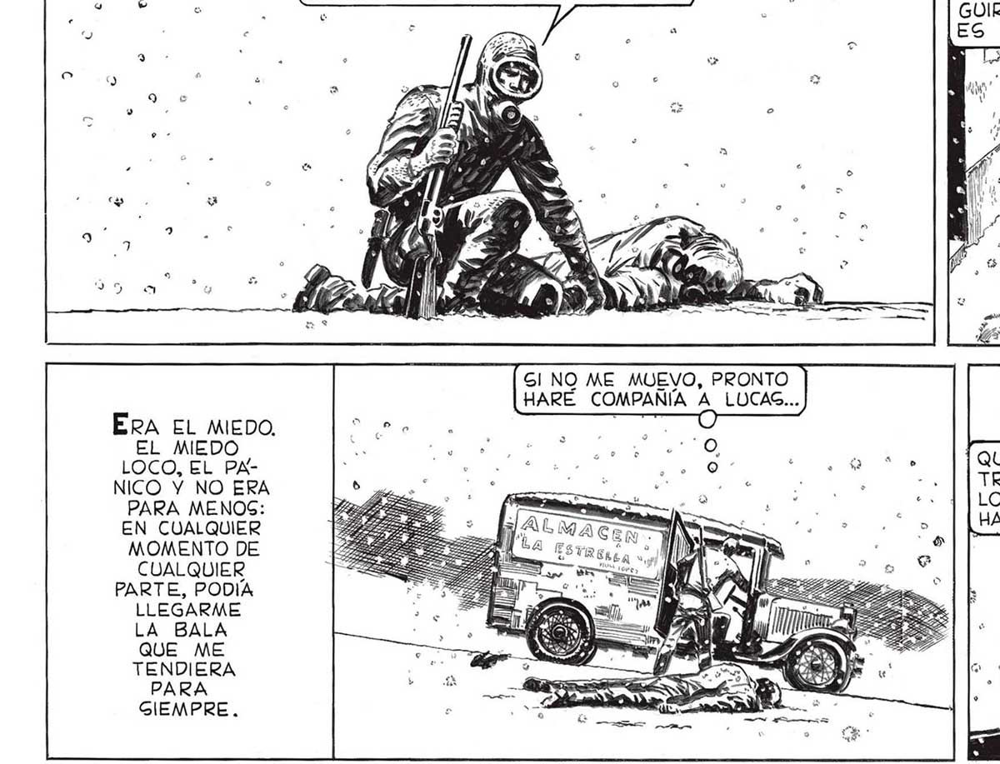
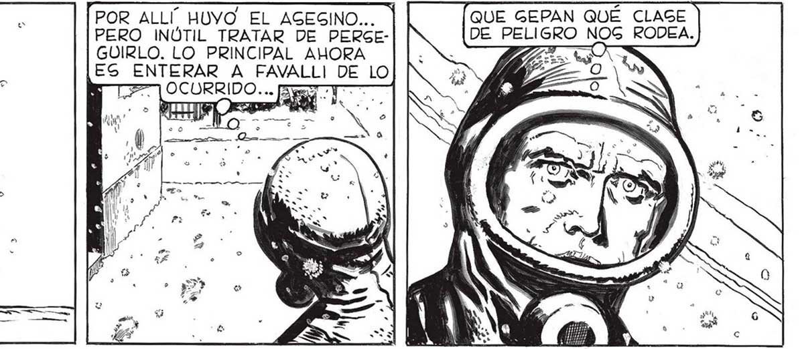
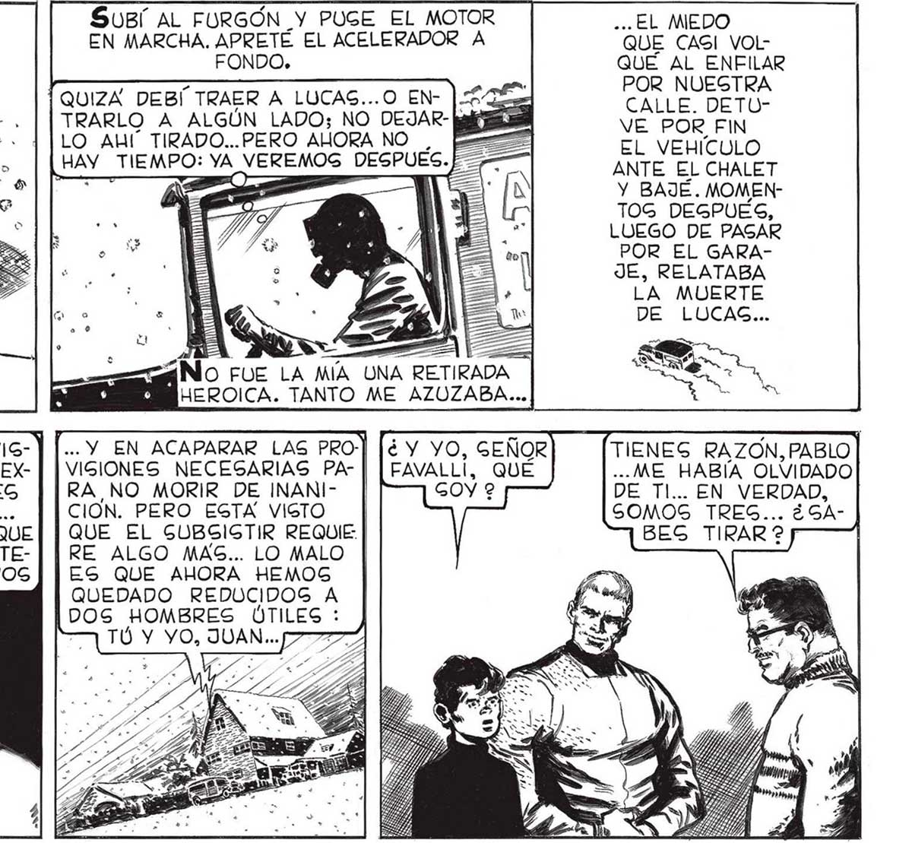

60 ERA EL MIEDO. EL MIEDO LOCO, EL PANICO Y NO ERA PARA MENOS: EN CUALQUIER MOMENTO DE CUALQUIER PARTE, PODÍA LLEGARME LA BALA QUE ME TENDIERA PARA GIEMPRE. ESO S y A A dE (8 DE 4 MUERTO... LO ACUCHILLARON Y LE QUITARON EL TRAJE AIGLANTE ... --. ANTE UN ABRUMADO AUDITORIO. EG TODO... ALLY QUEDO LUCAS, EN LA VEREDA... ME VINE EN GEGÚIDA, GIN PERDER UN INGTANTE. PU IS a ens ] HICISTE BIEN, JUAN... ESTA VIG|TO QUE NO DEBEREMOS ExX| PONERNOS A GALIR SI NO ES POR UNA GRAN NECESIDAD... HAGTA AHORA CREIMOG QUE TODO CONGIGTIÍA EN MANTENER A DISTANCIA LOG COPOS DE LA UER TE. POR ALLÍ HUVO EL AGEGINO... | PERO INÚTIL TRATAR DE PERGEGUIRLO. LO PRINCIPAL AHORA ca ENTERAR A FAVALLI DE LO ¿ $7 id ENT. UN SUBÍ AL FURGÓN Y PUGE EL MOTOR EN MARCHA. APRETÉ EL ACELERADOR A FONDO. [QUIZA DEBÍ TRAER A LUCAS...O EN- |. TRARLO A ALGÚN LADO; NO DEJAR- bajes LO AL” TIRADO...PERO ALORA NO HAY_ TIEMPO: YA VEREMOS DESPUES. Q AN, as —_—_— > — »” ] No FUE LA MÍA UNA RETIRADA QUE GEPAN QUÉ CLAGE DE PELIGRO NOG RODEA. pad ... EL MEDO QUE CASI VOLQUÉ AL ENFILAR POR NUEGTRA CALLE. DETUVE POR FIN EL VEHÍCULO ANTE EL CHALET Y BAJÉ. MOMENTOG DEGPUES, LUEGO DE PAGAR POR EL GARAJE, RELATABA LA MUERTE DE LUCAS... EROICA. TANTO ME AZUOZABA... ... Y EN ACAPARAR LAS PRO-] [é¿ y YO, GEÑOR VIGIONES NECEGARIAS PA- | | FAVALLI, QUÉ RA,NO MORIR DE INANI- GOY ? CION. PERO ESTA VIGTO RE ALGO MAS... LO MALO ES QUE AHORA HEMOS QUEDADO REDUCIDOS A DOS HOMBRES ÚTILES : 7 TÚ Y YO, JUAN... [7727 EN VERDAD, GOMOS TRES... ¿GABES TIRAR ?


